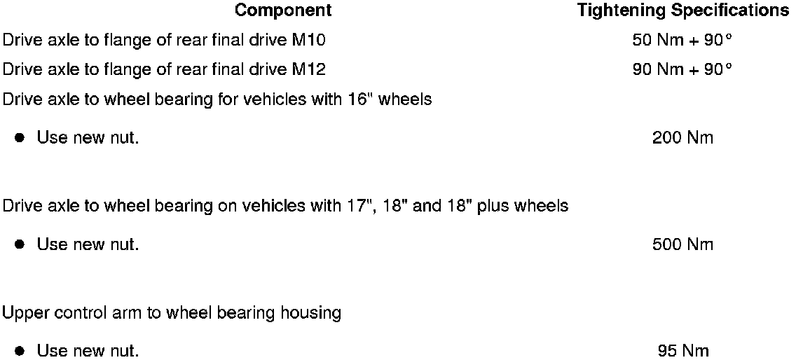
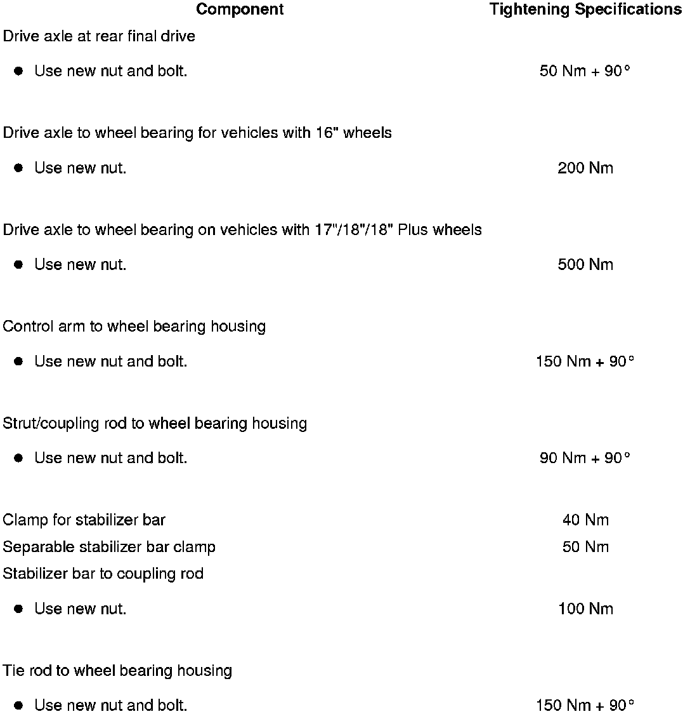

LEMON Manuals
: Even more car manuals for everyone: 1960-2025
Home
>>
Volkswagen
>>
2004
>>
Touareg (7LA) V6-3.2L (BAA)
>>
Repair and Diagnosis
>>
Steering and Suspension
>>
Wheels and Tires
>>
Wheel Hub
>>
Axle Nut
>>
Specifications
Axle Nut: Specifications
Front Suspension

Rear Suspension
